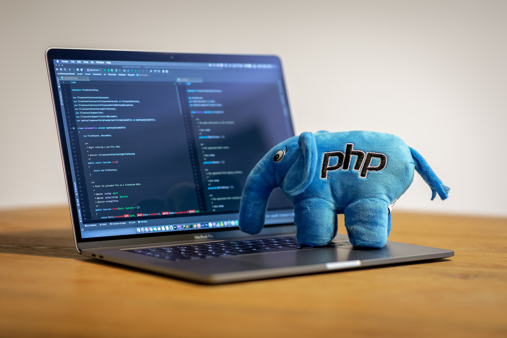

¿Para qué sirve el lenguaje PHP?
PHP es un lenguaje de programación destinado a desarrollar aplicaciones para la web y crear páginas web, favoreciendo la conexión entre los servidores y la interfaz de usuario. Entre los factores que hicieron que PHP se volviera tan popular, se destaca el hecho de que es de código abierto.
7 características del lenguaje PHP que lo convierten en uno de los más potentes
- Gran extensión de documentación lorem
- Variedad de herramientas para aprender
- Mucha oferta de trabajo
- Permite programación orientada a objetos
- Módulos externos para mejorar la aplicación web
- Se puede separar la estructura
- La libertad es un bien muy preciado
Ventajas del lenguaje PHP
- Lenguaje totalmente libre y abierto.
- Posee una curva de aprendizaje muy baja.
- Los entornos de desarrollo son de rápida y fácil configuración.
- Fácil de instalar: existen paquetes autoinstalables que integran PHP rápidamente.
- Fácil acceso e integración con la bases de datos.